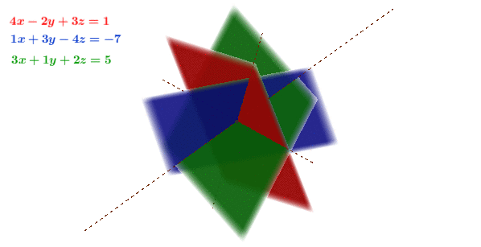
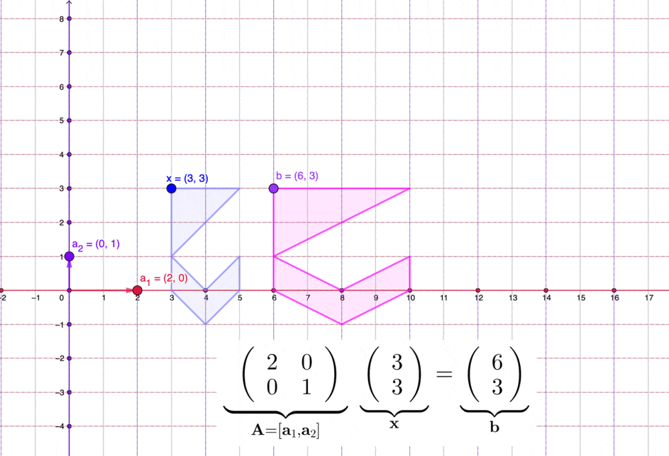

In etymology, the word “matrix” can be found in the root of matter and mother. Matrix in latin is to indicate a female animal kept for breeding or a womb. The movie, the Matrix, gives a metaphor for virtual space and cyberspace from which things and beings originate. All these reveal a simultaneous relationship between the embryo and the breeder, where matrix retains its generative and enveloping properties.
The original role of the matrix disclouses the source of being and becoming. One may wonder whether the entity in a mathematical matrix could also be working as generative as a numerical incubator. That is, whether the numerical matirx can originate an analogous process where various “embryos” can be implanted and can grow. The analogy we consider here is a paradigm about matrix computation. This paradigm is related to Platonic and Aristotelian views on generation. The study of generation is the study of the origination of forms, where the matrixial (or maternal) environment produces space for the emergence of new outcomes, and the computation summarizes purely abstract deductions, and provides foundations for more advanced outcomes.179 For the system \(\mathbf{A}\mathbf{x}=\mathbf{b}\), we can consider the vector \(\mathbf{x}\) as the maternal input of matter in generation, the matrix \(\mathbf{A}\) as the embryo from which the material is made the resulting product (the vector \(\mathbf{b}\)). The matrix \(\mathbf{A}\) becomes a productive function, a formation of a “thing” (self) and its “environment” (nonself).
Hereby, I suggest that we could imagine the computational relation as a universal process of the generation, and we could position the matrix as a hospitable space for such generation.180 Immanuel Kant, who is usually credited with the elaboration of the modern Western conception of ethics and morality, judged nations according to their hospitality: the way they treated strangers in their lands. He also outlined a framework for international law and cosmopolitan ethics in which hospitality was one of its conceptual foundations. From an abstract point of view, the hospitality can be represented in the form of matrices (and their generalized forms: linear operators) that model and manipulate the social norms and interactions. For matrix computations, we will see that a very wide variety of systems, with very different superficial structures, are at some level fundamentally equivalent. That is, many vastly different systems in nature and in human society share something in common. And among these systems, it does make sense to discuss the notion of computation in purely abstract forms, without referring to any specific type of the system. Matrix computation, or computation of linear systems in a general sense, builds up the fundamental equivalence bridging the differences.181 The basic point of this argument is that if the computational relation is universal, then it must effectively be capable of emulating any other form, and as a result it must be able to produce behavior that is as complex as the behaviors of that form. So knowing that a particular computation is universal immediately implies that its abstract form can produce behavior that is in a sense arbitrarily complex. It reminds ones to reconsider the potential of that relationship of entries, their computational procedures, and their possible outcomes.
One of our goals is to see how these two styles of expression (numerical matrix and social matrix) complement each other. It is important to have an algorithmic sense and an appreciation for high-performance matrix computations. After all, it is the clever exploitation of advanced architectures that account for much of the soaring success in the industrial and the social computations.
Almost all formulations of the matrix computation follows the same update pattern as an iteration such that \[\mathbf{C}\leftarrow\mathbf{C}+\mathbf{A}\mathbf{B}.\] For example, when \(\mathbf{A}\), \(\mathbf{B}\) and \(\mathbf{C}\) are \(3\times3\) matrices having some kind of echelon form, \[\begin{align*} \mathbf{C}=\mathbf{A}\mathbf{B} &=\left[\begin{array}{ccc} a_{11} & a_{12} & a_{13}\\ 0 & a_{22} & a_{23}\\ 0 & 0 & a_{33} \end{array}\right]\left[\begin{array}{ccc} b_{11} & b_{12} & b_{13}\\ 0 & b_{22} & b_{23}\\ 0 & 0 & b_{33} \end{array}\right]\\ &=\left[\begin{array}{ccc} a_{11}b_{11} & a_{11}b_{12}+a_{12}b_{22} & a_{11}b_{13}+a_{12}b_{23}+a_{13}b_{33}\\ 0 & a_{22}b_{22} & a_{22}b_{23}+a_{23}b_{33}\\ 0 & 0 & a_{33}b_{33} \end{array}\right], \end{align*}\] then the result suggests a similar echelon form.182 The word echelon comes from the military use, where it refers to a step-like formation of troops. Also, it is a government code name of an interception system for collection and analysis network, also known as the Five Eyes. Unlike the normal spy networks or intelligence collective operations developped during the Cold War, Echelon was designed primarily for non-military targets and for public and economic espionages by intercepting communications via conversations, telephones, faxes, e-mails, messages, etc. The entries are the result of the following abbreviated inner products \[ c_{ij}=\begin{cases} a_{ik}b_{kj}=0, & \mbox{ when }k<i\mbox{ or }j<k,\\ \sum_{k=i}^{j}a_{ik}b_{kj}, & \:\mbox{otherwise}. \end{cases} \] We can implement this matrix mutiplication by an update iteration algorithm:
1: Criteria: \(\mathbf{A}=[a_{ij}]_{n\times n},\mathbf{B}=[b_{ij}]_{n\times n}\). 2: Variable: \(\mathbf{C}=[c_{ij}]_{n\times n}\) 3: FOR \(i\) from \(1\) to \(n\) DO: 4: \(\qquad\) FOR \(j\) from \(i\) to \(n\) DO: 5: \(\qquad\) \(\qquad\) FOR \(k\) from \(i\) to \(j\) DO: 6: \(\qquad\) \(\qquad\) \(\qquad\) \(c_{ij}=c_{ij}+a_{ik}b_{ki}\) 7: \(\qquad\) \(\qquad\) END FOR-\(k\) LOOP 8: \(\qquad\) END FOR-\(j\) LOOP 9: END FOR-\(i\) LOOP 10:RETURN \([c_{ij}]_{n\times n}\)
Gaussian elimination is a method for solving systems of linear equations by the use of echelon forms. There are many possible ways to solve systems of equations, however, Gaussian elimination is a way that always works. Consider the previous system (10.1) of two unknowns, \(x_1\) and \(x_2\). Its elimination form is given by \[\begin{align*} 0.6x_{1} + 0.3x_{2}=1 & \; & \; &\; & \frac{6}{10}x_{1} + \frac{3}{10}x_{2}=1 \\ & \,& \Rightarrow &\, &\\ -0.3x_{1} + 0.6x_{2} =0 & \; &\; &\; & \frac{15}{20}x_{2}=\frac{1}{2}. \end{align*}\] Before the elimination, \(x_{1}\) and \(x_{2}\) appeared in both equations. After the elimination, the first unknown \(x_{1}\) has disappeared from the second equation. We can solve the elimination form by substituting \(x_{2}=2/3\) back into the first equation.
If we summarize the coefficient as the matrix, the above elimination produces an echelon form of the matrix - an upper triangular matrix.183 An upper triangular matrix, say \(\mathbf{U}=[u_{ij}]_{n\times n}\), is a matrix satisfying with \([u_{ij}]_{n\times n}=0\) for \(i>j\) and \(u_{ii}\neq0\) for \(i\leq n\). Similarly, the lower triangular matrix, say \(\mathbf{L}=[l_{ij}]_{n\times n }\), satisfies \([l_{ij}]_{n\times n}=0\) for \(i<j\) and \(l_{ii}\neq0\) for \(i\leq n\). With the form, we can solve the system from the bottom upwards. This process of solving the system is called backward substitution. It works for any size of unknowns as long as the system can be eliminated to an upper triangular pattern. The goal of Gaussian elimination is to give an operation to form such a pattern. In above example, we substracted \(x_1\) from the second equation. The step that eliminates \(x_1\) is done by multiplying some factor(s) to the equation(s). In the example, if you mutiple the frist equation by \(0.3/0.6=1/2\), and then substract the first from the second, you will get this triangular form. The multiplier \((0.3)/(0.6)\), consists of two numerics, \(0.3\) and \(0.6\) are the (positive) coefficients of the eliminated unknown \(x_1\) in the second and the first equation, respectively. The coefficient of the eliminated variable is called the pivot.
If we present the eliminated form in terms of matrix, the matrix is \[\left[\begin{array}{cc} \frac{6}{10} & \frac{3}{10}\\ 0 & \frac{15}{20} \end{array}\right].\] Such a staircase matrix format is called the echelon matrix. The nonzero rows of the matrix precede the zero rows. The column numbers of the leading entries, namely the pivots of the nonzero rows, form a staircase type.184 Note that zero is not a pivot. For the following system, the pivot of \(y\) is zero. \[\begin{align*} 2x+3y =5 & \; & 2x+ 3y =5 &\\ & \, \Rightarrow \, & &\\ 10x+15y =10 & \; & 0y =5. & \end{align*}\] Doing Gaussian elimination on such a system will result in a contradiction. When this happens, it is safe to say that the system has no solution. However, for the system \[\begin{align*} 2x+3y =5 & \; & 2x+ 3y =5 &\\ & \, \Rightarrow \, & &\\ 10x+15y =10 & \; & 0y =0, & \end{align*}\] the second equation \(0y=0\) gives no constraint on \(y\). Then any combination of \(x\) and \(y\) satisfying the first equation will also be the solutions of the second. It means that the system has infinite solutions. Thus, for zero leading entries in the echelon matrix, we may face the situation of either no solution or infinite solutions. In above system, the pivots are \(6/10\) and \(15/20\). To solve \(n\) equations, we need \(n\) pivots.
Figure 11.1: Gaussian elimination in 3D
Figure 11.1 shows the geometrical interpretation of constructing a reduced echelon form.185 When the pivots are normalized to one, the echelon form is calle the reduced echelon form. We can see that the procedures (multiplication and substraction) have no effect on the solution point, namely the intersection. Each equation of the system (3D) is represented by a plane (2D). Multiplication extends the plane (which has no visual effect), substraction rotates the plane. None of the operations shift the solution point. This interpretation illuminates some general rules of constructing an echelon form or a Gaussian elimination. The rules can be summarized as follows:186 These rules can be presented in terms of elimentary matrices, see section[?].
The solutions to a linear system of equations do not change if
we swap the order of two rows,
multiply a row with a constant ,
or add a multiple of another row to a row.
With these rules, let’s consider a general linear system \[\begin{align*} a_{11}x_{1}+\cdots+a_{1n}x_{n} &=y_{1},\\ a_{21}x_{1}+\cdots+a_{2n}x_{n} &=y_{2},\\ \vdots\qquad \quad & \vdots\\ a_{m1}x_{1}+\cdots+a_{mn}x_{n} &=y_{n}. \end{align*}\] If we first work with \(x_{1}\), then two things can happen. Either all \((a_{i1})_{i=1,\dots m}\) are zero, or at least one \(a_{i1}\) of is non-zero. We can do nothing for the first case. For the second case, we reorder the system (rule 1) so that the new \(a_{11}^{'}=a_{i1}\neq0\) is the first pivot. Then we use the mutiplier \(-(a_{21}/a_{11}^{'})\) to subtract \(x_{1}\) from the second equation, use the mutiplier \(-(a_{31}/a_{11}^{'})\) to subtract \(x_{1}\) from the third equation, so on and so forth. These subtractions will eliminate \(x_{1}\) from all equations except the first. The system becomes \[\begin{align*} a_{11}^{'}x_{1}+a_{12}^{'}x_{2}\cdots+a_{1n}^{'}x_{n} &=y_{1}^{'},\\ a_{22}^{'}x_{2}+\cdots+a_{2n}^{'}x_{n} &=y_{2}^{'},\\ \vdots\qquad \quad & \vdots\\ a_{m2}^{'}x_{2}+\cdots+a_{mn}^{'}x_{n} &=y_{n}^{'}, \end{align*}\] where \(a_{ij}^{'}\) are the new coefficients after the swaps and mutiplications. Repeating this procedure, we will confront three possible outcomes when \(m>n\).
The first case is that if at least one equation contains \(0=y_{i}^{*}\neq0\) there is no solution (overdetermined).
In the second case, at the end, there might be equations left of the type \(0=0\). These can just be removed. And we will have an upper triangular form of \(n\) non-zero equation as follows \[\begin{align*} a_{11}^{*}x_{1}+a_{12}^{*}x_{2}+\cdots+a_{1n}^{*}x_{n} &=y_{1}^{*},\\ a_{22}^{*}x_{2}+\cdots+a_{2n}^{*}x_{n} &=y_{2}^{*},\\ \vdots\qquad \quad & \vdots\\ a_{nn}^{*}x_{n} &=y_{n}^{*}, \end{align*}\] where \(a_{ij}^{*}\) and \(y_{i}^{*}\) have new values under the elimination procedure. We can use the backward substitution to solve this system. In this case, there is a unique solution.
In the third case, there are fewer equations than unknowns after the elimination (underdetermined). For example, \[\begin{align*} a_{11}^{*}x_{1}+a_{12}^{*}x_{2}+\cdots+a_{14}^{*}x_{4} &=y_{1}^{*},\\ a_{22}^{*}x_{2}+\cdots+a_{24}^{*}x_{4} &=y_{2}^{*},\\ a_{43}^{*}x_{3}+a_{44}^{*}x_{4} &=y_{3}^{*}. \end{align*}\] We have three equations but four unknonws. In this example, the pivots are for \(x_{1}\), \(x_{2}\) and \(x_{3}\). There is in fact no constraint on the remaining variable \(x_{4}\). Thus, we have an infinite number of solutions.
Among these three cases, the second one is of most interests, because it guarantees a unique solution. The unique solution of this general linear system is a vector called solution vector such that the resulting equations are satisfied for these choices of the variables. When there are multiple solutions, the set of all solutions is called the solution set of the linear system, and two linear systems are said to be equivalent if they have the same solution vector or solution set. The key idea behind the Gaussian elimination is to construct the equivalent systems, i.e. they all have the same solution vector or solution set.
The computation for the unique solution in the second case uses the backward substitution. Given an \(n\times n\) upper triangular matrix \(\mathbf{A}\) with non-zero diagonal entries, and \(\mathbf{b}\in\mathbb{R}^{n}\), the backward substitution is as follows:
1: Criteria: \(\mathbf{A}=[a_{ij}]_{n\times n}, [a_{ij}]_{n\times n}=0\) for \(i>j\) and \(a_{ii}\neq0\) for \(i\leq n\), \(\mathbf{b}\in\mathbb{R}^n\). 2: Variable: \(\mathbf{x}\in\mathbb{R}^n\) 3: FOR \(i\) from \(n\) to \(1\) DO: 4: \(\qquad\) \(x_{i}=(b_{i}-a_{i,i+1}x_{i+1}-\cdots-a_{i,n}x_{n})/a_{i,i}\) 5: END FOR-\(i\) LOOP 6: RETURN \(\mathbf{x}\)
The backward substitution is easy to implement. But when the system grows larger (more unknowns, more equations), a simple algorithm such as backward substitution may become costly. The complexity of backward substitution is given as follows:187 The current computers store real numbers in a format called floating points, i.e. a real number using a block of \(64\) bits - \(0\)s and \(1\)s. When computers carry out an arithmetic operation such as addition or subtraction on numbers, a very rough estimate of the time required to proceed this computation can be calculated by counting the total number of floating point operations. The complexity of an operation is the (minimum) number of floating point operations required to carry it out. From the bottom upwards in the echelon form, the first step only requires a division of \(a_{nn}\). The next step requires one multiple, one subtraction, and one division \(x_{n-1}=(b_{n-1}-a_{nn}x_{n})/a_{n-1,n-1}\), so three operations. In \(k\)-step, the operations contain \(k-1\) multiplies, \(k-1\) subtractions, and one division, hence \(2k-1\) operations in total. Thus, the total number of operations for backward substitution of an \(n\)-variables, \(n\)-equation echelon system is \(1+3+\cdots+(2n-1)=n^{2}\). But the inner product of two \(n\)-vectors only costs \(2n-1\) operations: \(n\) scalar mutiplications and \(n-1\) scalar additions. We can imagine that for a large \(n\), the complexity of the backward substitution is much larger than that of the inner product.188 In certain settings it is handy to use the “Big-Oh” notation when an order of magnitude assessment of work suffices. Inner products are \(O(n)\), matrix-vector products are \(O(n^{2})\), and matrix-matrix products are \(O(n^{3})\).
When there is little prospect in proceeding, one solution is to take a backward step, to re-examine the passing path and hopefully to explore a possible way out. The solution for many difficult problems in mathematics could also be found if the problems were expressed in the inverse manner. In this sense, the matrix inversion could illuminate a deeper mechanism regarding the matrix computation.
We knew that it is straightforward to compute the quantity \(1/a\) if \(a\in\mathbb{R}\). But to compute \(1/\mathbf{A}\) for a matrix \(\mathbf{A}\), we should be sure that the inverse \(1/\mathbf{A}\) makes sense. That is, the laws of matrix multiplication are not violated under the inversion. Notice that the order matters in a matrix multiplication. We do not expect \(\mathbf{A}\mathbf{B}=\mathbf{B}\mathbf{A}\) in general. For inversion, the order implies that there exists two types of pseudo inversions of a matrix. That is, for a matrix \(\mathbf{A}\in\mathbb{R}^{m\times n}\) with \(m,n\in\mathbb{N}\), we expect to have a left inverse and a right inverse of the matrix \(\mathbf{A}\). If a matrix \(\mathbf{B}\in\mathbb{R}^{n\times m}\) satisfies \(\mathbf{B}\mathbf{A}=\mathbf{I}\), then \(\mathbf{B}\) is called a left inverse of \(\mathbf{A}\). The matrix \(\mathbf{A}\) is said to be left invertible if a left inverse exists. Similarly, if \(\mathbf{A}\mathbf{C}=\mathbf{I}\), then \(\mathbf{C}\in\mathbb{R}^{n\times m}\) is called the right inverse of \(\mathbf{A}\). The right inverse \(\mathbf{B}\) and the left inverse \(\mathbf{C}\) can be completely different matrices. If the right inverse \(\mathbf{B}\) and the left inverse \(\mathbf{C}\) are different, then the inverse matrix of \(\mathbf{A}\) does not exist.189 Usually the left or right inverses are not unique. There may be more than one left or right inverses. When people refer to an invertible matrix, they often implicitly refer to a square matrix (\(n=m\)) whose left inverse and right inverse are equivalent.
For a square matrix \(\mathbf{A}\in\mathbb{R}^{n\times n}\), the matrix \(\mathbf{A}\) is invertible if there exists a matrix \(\mathbf{A}^{-1}\) such that \[\mathbf{A}^{-1}\mathbf{A}=\mathbf{I},\quad\mbox{and }\quad\mathbf{A}\mathbf{A}^{-1}=\mathbf{I}.\]190 Note that for square matrices, left inverse, right inverse and inverse \(\mathbf{A}^{-1}\) are equivalent. That is, if \(\mathbf{A}\) is right invertible, then it is left invertible, and vice-versa. This inverse is unique. Otherwise, suppose that both \(\mathbf{B}\) and \(\mathbf{C}\) work as inverses to the square matrix \(\mathbf{A}\), we can show that these matrices must be identical. The associative and identity laws of matrices yield \[\mathbf{B}=\mathbf{B}\mathbf{I}\overset{(a)}{=}\mathbf{B}(\mathbf{A}\mathbf{C})\\=(\mathbf{B}\mathbf{A})\mathbf{C}=\mathbf{I}\mathbf{C}=\mathbf{C}.\] If \(\mathbf{A}^{-1}\) exists, then \(\mathbf{A}\) is said to be invertible or nonsingular. Otherwise, we say \(\mathbf{A}\) is singular or non-invertible.
The study of matrix inversion is equivalent to the study of solving a linear equation system. Assume \(\mathbf{A}\in\mathbb{R}^{m\times n}\), \(\mathbf{b}\in\mathbb{R}^{m}\), \(\mathbf{x}\in\mathbb{R}^{n}\), and the linear system \(\mathbf{A}\mathbf{x}=\mathbf{b}\). The solution of the system \(\mathbf{x}=\mathbf{A}^{-1}\mathbf{b}\) includes the matrix inversion \(\mathbf{A}^{-1}\). As for the square matrix \(\mathbf{A}\in\mathbb{R}^{n\times n}\), the inverse \(\mathbf{A}^{-1}\), if it exists, is unique. For example, consider the solution of the following system \[\begin{split}x_{1}= & y_{1}\\ x_{2}= & y_{1}+y_{2}\\ x_{3}= & y_{1}+y_{2}+y_{3} \end{split} \Leftrightarrow\mathbf{x}=\left[\begin{array}{ccc} 1 & 0 & 0\\ 1 & 1 & 0\\ 1 & 1 & 1 \end{array}\right]\left[\begin{array}{c} y_{1}\\ y_{2}\\ y_{3} \end{array}\right]=\mathbf{A}^{-1}\mathbf{y}\] As we will see, \(\mathbf{A}^{-1}\), the lower triangular matrix, is both the left and the right inverse of \(\mathbf{A}\). \[\left[\begin{array}{ccc} 1 & 0 & 0\\ -1 & 1 & 0\\ 0 & -1 & 1 \end{array}\right]\left[\begin{array}{ccc} 1 & 0 & 0\\ 1 & 1 & 0\\ 1 & 1 & 1 \end{array}\right]=\left[\begin{array}{ccc} 1 & 0 & 0\\ 1 & 1 & 0\\ 1 & 1 & 1 \end{array}\right]\left[\begin{array}{ccc} 1 & 0 & 0\\ -1 & 1 & 0\\ 0 & -1 & 1 \end{array}\right]=\left[\begin{array}{ccc} 1 & 0 & 0\\ 0 & 1 & 0\\ 0 & 0 & 1 \end{array}\right].\] namely, \(\mathbf{A}^{-1}\mathbf{A}=\mathbf{A}\mathbf{A}^{-1}=\mathbf{I}\). Thus, we expect to have a unique solution for the system \(\mathbf{A}\mathbf{x}=\mathbf{b}\) when \(\mathbf{A}\) is invertible.191 For \(\mathbf{A}\in\mathbb{R}^{m\times n}\), when \(m<n\), the number of unknown variables \((x_{i})_{i\leq n}\) is more than the number of equations, the system \(\mathbf{A}\mathbf{x}=\mathbf{b}\) is an overdetermined linear system. When \(n>m\), the system is an underdetermined linear system. Therefore, the computational procedure of solving a linear system is equivalent to finding an inverse.
The equivalence can be revealed by consideroing the Gaussian elimination in the matrix form. Recall that the idea of Gaussian elimination is to reduce the system of equations to an echelon form by certain legitimate and reversible algebraic operations (elementary operations). In the echelon form, we can easily see what the solutions to the system are, if there are any. In matrix computations, these elementary operations are summarized by the so-called elementary matrices. The elementary matrice provide elementary operations, such as row or column permutations that are transferred from the identity matrix \(\mathbf{I}\) by some simple invertible operations. Thus, all elementary matrices are invertible matrices as the elementary operations are invertible. Recall the elemantary operations in the Gaussian elimination:
The order of two equations can be swapped: Permutations
Multiplying an equation by a nonzero constant: Scaling
An equation can be replaced by the sum of itself and a nonzero multiple of any other equation: Replacement. In particular, the row can be replaced by the sum of that row and a nonzero multiple of any other row; that is: \(\mbox{row}_{i}=\mbox{row}_{i}-a_{ij}\mbox{row}_{j}\).
These operations can also be stated in an elementary matrix form. For example: \[ \left[\begin{array}{cccc} 1 & 0 & 0 & 0\\ 0 & 1 & 0 & 0\\ -2 & 0 & 1 & 0\\ 0 & 0 & 0 & 1 \end{array}\right]\left[\begin{array}{c} x_{1}\\ x_{2}\\ x_{3}\\ x_{4} \end{array}\right]=\left[\begin{array}{c} x_{1}\\ x_{2}\\ -2x_{1}+x_{3}\\ x_{4} \end{array}\right]. \] It is obvious that the matrix is an elementary matrix, and the matrix does the job as the subtraction and mutiplication steps in the Gaussian elimination. Let \(\mathbf{E}_{ij}(d)\) be the replacement elementary matrix for the elementary operation of adding \(d\) times the \(j\)-th row to the \(i\)-th row. The elementary matrix (operation) \(\mathbf{E}_{ij}(d)\) of switching the \(i\)-th and \(j\)-th rows can always be undone by applying \(\mathbf{E}_{ji}(-d)\) such that \[\mathbf{E}_{ij}(d)\mathbf{E}_{ji}(-d)=\mathbf{E}_{ji}(-d)\mathbf{E}_{ij}(d)=\mathbf{I}.\] We can apply this elementary matrix for constructing the triangular matrix (echelon form).
Similarly, let \(\mathbf{E}_{ij}\) be the permutation elementary matrix of switching the \(i\)-th and \(j\)-th rows of the matrix, and let \(\mathbf{E}_{i}(c)\) be the scaling elementary matrix of multiplying the \(i\)-th row by the non-zero constant \(c\). They are also invertible.192 The diagonal square matrix is not an elementary matrix. But if \(\mathbf{A}\) is a diagonal square matrix with nonzero diagonal, then it is always invertible. \[\mathbf{A}=\left[\begin{array}{cccc} a_{1} & 0 & \cdots\\ 0 & a_{2} & 0 & \cdots\\ \vdots & & \ddots\\ 0 & \cdots & & a_{n} \end{array}\right],\;\\ \mathbf{A}^{-1}=\left[\begin{array}{cccc} a_{1}^{-1} & 0 & \cdots\\ 0 & a_{2}^{-1} & 0 & \cdots\\ \vdots & & \ddots\\ 0 & \cdots & & a_{n}^{-1} \end{array}\right].\] We denote the diagonal matrix via \(\mathbf{A}=\mbox{diag}(a_{1},\dots,a_{n})\).
Examples of elementary matrices
Figure 11.2: Matrices transform a set of vectors in two dimensions
For some vectors in \(\mathbb{R}^n\), a matrix in \(\mathbb{R}^{n\times n}\) can transform these vectors into new positions in \(\mathbb{R}^n\). See figure 11.2 for an illustration in \(\mathbb{R}^2\). As \(\mathbf{E}_{ij}(d)\) always satisfies the matrix multiplication laws, for \(\mathbf{A}\mathbf{x}=\mathbf{b}\), multiplying both sides by \(\mathbf{E}_{ij}(d)\) gives a transformed system \(\mathbf{E}_{ij}(d)\mathbf{A}\mathbf{x}=\mathbf{E}_{ij}(d)\mathbf{b}\). The solution(s) \(\mathbf{x}^{*}\) of the original system will still be the solution(s) of the transformed system \(\mathbf{E}_{ij}(d)\mathbf{A}\mathbf{x}^{*}\). Thus \(\mathbf{A}\mathbf{x}=\mathbf{b}\) and \(\mathbf{E}_{ij}(d)\mathbf{A}\mathbf{x}=\mathbf{E}_{ij}(d)\mathbf{b}\) are two equivalent systems.
The following illustration gives the compution of the inverse \(\mathbf{A}^{-1}\) in terms of the elementary matrices. Consider the Gaussian elimination of \[\begin{align*} 2x_{1}-x_{2} =1 & \; & x_{1}+ x_{2} =-5 &\\ & \, \Rightarrow \, & &\\ 4x_{1}+4x_{2} =20 & \; & -3x_{2} =-9. & \end{align*}\] The associated procedure of elementary matrices is given by \[ \mathbf{E}_{21}(-2)\mathbf{E}_{1}(1/4)\mathbf{E}_{12}\left[\begin{array}{cc} 2 & -1\\ 4 & 4 \end{array}\right]\left[\begin{array}{c} x_{1}\\ x_{2} \end{array}\right]= \mathbf{E}_{21}(-2)\mathbf{E}_{1}(1/4)\mathbf{E}_{12}\left[\begin{array}{c} 1\\ 20 \end{array}\right] \\ \Rightarrow\mathbf{E}_{21}(-2)\mathbf{E}_{1}(1/4)\left[\begin{array}{cc} 4 & 4\\ 2 & -1 \end{array}\right]\left[\begin{array}{c} x_{1}\\ x_{2} \end{array}\right]= \mathbf{E}_{21}(-2)\mathbf{E}_{1}(1/4)\left[\begin{array}{c} 20\\ 1 \end{array}\right] \\ \Rightarrow\mathbf{E}_{21}(-2)\left[\begin{array}{cc} 1 & 1\\ 2 & -1 \end{array}\right]\left[\begin{array}{c} x_{1}\\ x_{2} \end{array}\right] =\mathbf{E}_{21}(-2)\left[\begin{array}{c} 5\\ 1 \end{array}\right] \\ \Rightarrow\left[\begin{array}{cc} 1 & 1\\ 0 & -3 \end{array}\right]\left[\begin{array}{c} x_{1}\\ x_{2} \end{array}\right] =\left[\begin{array}{c} 5\\ -9 \end{array}\right]. \] The backward substitution can also be done by the elementary matrices. Continue our previous representation of the triangular matrix. \[ \mathbf{E}_{12}(-1)\mathbf{E}_{2}(-1/3)\left[\begin{array}{cc} 1 & 1\\ 0 & -3 \end{array}\right]\left[\begin{array}{c} x_{1}\\ x_{2} \end{array}\right]= \mathbf{E}_{12}(-1)\mathbf{E}_{2}(-1/3)\left[\begin{array}{c} 5\\ -9 \end{array}\right] \\ \Rightarrow\mathbf{E}_{12}(-1)\left[\begin{array}{cc} 1 & 1\\ 0 & 1 \end{array}\right]\left[\begin{array}{c} x_{1}\\ x_{2} \end{array}\right] =\mathbf{E}_{12}(-1)\left[\begin{array}{c} 5\\ 3 \end{array}\right] \\ \Rightarrow\left[\begin{array}{cc} 1 & 0\\ 0 & 1 \end{array}\right]\left[\begin{array}{c} x_{1}\\ x_{2} \end{array}\right] =\left[\begin{array}{c} 2\\ 3 \end{array}\right]. \] Now, we’ve reached the solution \(\mathbf{x}=\mathbf{A}^{-1}\mathbf{b}\) where \(\mathbf{A}^{-1}=\mathbf{E}_{12}(-1)\mathbf{E}_{2}(-1/3)\mathbf{E}_{21}(-2)\mathbf{E}_{1}(1/4)\mathbf{E}_{12}\). This procedure is feasible for any linear system \(\mathbf{A}\mathbf{x}=\mathbf{b}\) with the square matrix \(\mathbf{A}\).
Proof
Matrix inverse properties: If matrices \(\mathbf{A}\) and \(\mathbf{B}\) are invertible, then \(\mathbf{A}^{\top}\), \(\mathbf{A}^{-1}\), \(\mathbf{B}^{-1}\), and \(\mathbf{A}\mathbf{B}\) are also invertible, and
\((\mathbf{A}^{-1})^{-1}=\mathbf{A}\).
\((\mathbf{A}\mathbf{B})^{-1}=\mathbf{B}^{-1}\mathbf{A}^{-1}\).193 The inverse of a product \(\mathbf{A}\mathbf{B}\) comes in an reverse order because the order matters in the matrix mutiplication.
\((\mathbf{A}^{-1})^{\top}=(\mathbf{A}^{\top})^{-1}\).
Proof
Note that unlike the scalar case, it is hard to say much about the invertibility of \(\mathbf{A}+\mathbf{B}\), even if both \(\mathbf{A}\) and \(\mathbf{B}\) are invertible.
In the Gaussian elimination, we saw that having a unique solution, the pivots of the echelon form needs to be non-zero. If the \(i\)-th pivot is zero, it means that either there is not enough information for solving the variable \(x_{i}\), namely underdetermined, or the system has no solution, namely overdetermined. In this case, it also means that the matrix inversion \(\mathbf{A}^{-1}\) does not exist, since the system cannot provide a unique solution. In other words, the inverse \(\mathbf{A}^{-1}\) exists when \(\mathbf{A}\) has a full set of \(n\) pivots.
We can summarize the conditions regarding the invertibility. Let \(\mathbf{A}\) be an \(n\times n\) matrix. The following statements are equivalent.
The matrix \(\mathbf{A}\) is invertible or nonsingular.
Given any \(n\times1\) vector \(\mathbf{b}\), the linear system \(\mathbf{A}\mathbf{x}=\mathbf{b}\) has a unique solution.
The matrix \(\mathbf{A}\) has a full set of \(n\) pivots. (Namely, \(\mbox{det}(\mathbf{A})\neq0\).)194 See section [?] for the definition of \(\mbox{det}\).
The system of equations \(\mathbf{A}\mathbf{x}=0\) has the unique solution \(\mathbf{x}=0\).195 We can prove this statement from 2). Suppose 2) is true, then \(\mathbf{A}\mathbf{x}=\mathbf{b}\) has a unique solution, denoted by \(\mathbf{x}^{*}\). Suppose \(\mathbf{A}\mathbf{x}=0\) has a non-trivial solution, say \(\mathbf{x}=\mathbf{q}\) and \(\mathbf{q}\neq0\), then \(\mathbf{A}(\mathbf{x}^{*}+\mathbf{q})=\mathbf{b}\) is also valid. It means that we have obtained another solution \(\mathbf{x}^{*}+\mathbf{q}\), which contradicts with 2). So \(\mathbf{q}=0\) is the unique solution of \(\mathbf{A}\mathbf{x}=0\).
Gaussian elimination is an approach that always works. But in terms of computational efficiency, very often it may not be the case. For example, a linear system \(\mathbf{A}\mathbf{x}=\mathbf{b}\) with as many as \(100,000\) variables of the vector \(\mathbf{x}\) often arise in the solution of differential equations. The coefficient matrix \(\mathbf{A}\) for the system is sparse; that is, a large percentage of the entries of the coefficient matrix are zero. Inverting \(\mathbf{A}\) directly in this situation triggers a high computational cost. Other iterative approaches may provide more efficient solutions if they can utilize some special factors of the matrix \(\mathbf{A}\).
Let’s review the Gaussian elimination procedure. It starts with the last non-zero row, scales all the leading entries on the diagonal to one, then backward substitutes row by row up to the first row. We can think of two phases existing in the Gaussian elimination. The first phase (find and scale the pivots) is forward solving, and the second phase (backward substitution) is backward solving. Many key ideas of computation, when you look at them closely, share such a forward and backward strategy. In matrix computation, this forward and backward procedure can be presented by factorizating one square matrix into two triangular matrices, called the LU decomposition.
The idea behind Gaussian elimination is to convert a given system \(\mathbf{A}\mathbf{x}=\mathbf{b}\) to an equivalent triangular system (echelon form. We have seen that the construction of the upper triangular form is to multiple some elementary matrices. Notice that each replacement matrix \(\mathbf{E}_{ij}(d)\) has a lower triangular structure for \(i<j\).196 This is the feature of forward solving phase, as the phase eliminates row by row up to the first row. The forward solving phase includes a sequence of multiplicative elementary matrices that can be denoted by a lower triangular matrix \(\mathbf{L}\), e.g. \(\mathbf{L}=\mathbf{E}_{12}^{-1}(d_{1})\mathbf{E}_{23}^{-1}(d_{2})\cdots\). After the forward solving phase, the nonsingular matrix \(\mathbf{A}\) turns into an upper triangular matrix, say \(\mathbf{U}\). These two phases are given as follows:
The LU factorization shows that one square system \(\mathbf{A}\mathbf{x}=\mathbf{b}\) is equivalent to two triangular systems \(\mathbf{A}\mathbf{x}=\mathbf{L}(\mathbf{U}\mathbf{x})=\mathbf{L}\mathbf{c}=\mathbf{b}\). In summary, the forward and backward steps solve \(\mathbf{A}\mathbf{x}=\mathbf{b}\) as follows:
LU factorization of \(\mathbf{A}\). \(\mathbf{A}=\mathbf{L}\mathbf{U}\).
Forward: \(\mathbf{L}\mathbf{c}=\mathbf{b}\)
Backward: \(\mathbf{U}\mathbf{x}=\mathbf{c}\)
The factorization can gain a lot computational efficiency. In section 11.1, we saw that the complexity of Gaussian elimination is of the magnitude \(O(n^{3})\), while in the backward substitution step, complexity is of the magnitude \(O(n^{2})\). The decrease of complexity comes with the (upper) triangular structure where the first equation involves all the variables, the second equation involve all but the first, and so forth. In other words, the computational complexity of solving a triangular system is smaller.
The following matrix is a second order difference matrix. It is a discrete counterpart of the second order differentiation, which is used in the diffusion models. Recall that the second difference operation \((x_{i+1}-x_{i})-(x_{i}-x_{i-1})=x_{i-1}-2x_{i}+x_{i+1}\) in chapter 8.5. The matrix form of this operation is given by \[\mathbf{A}\mathbf{x}=\left[\begin{array}{ccccc} 2 & -1 & \cdots & & 0\\ -1 & 2 & -1 & \cdots\\ \vdots & \ddots & \ddots & \ddots & \vdots\\ 0 & \cdots & -1 & 2 & -1\\ 0 & 0 & \cdots & -1 & 1 \end{array}\right]\left[\begin{array}{c} x_{1}\\ x_{2}\\ \vdots\\ x_{n-1}\\ x_{n} \end{array}\right] \\ =-\left[\begin{array}{c} x_{2}-2x_{1}\\ x_{1}-2x_{2}+x_{3}\\ \vdots\\ x_{n-2}-2x_{n-1}+x_{n}\\ x_{n-1}-x_{n} \end{array}\right] =\left[\begin{array}{c} b_{1}\\ b_{2}\\ \vdots\\ b_{n-1}\\ b_{n} \end{array}\right].\] Except the first and the last row, the matrix \(\mathbf{A}\) has the second differences for the rest entries. The system \(\mathbf{A}\mathbf{x}=\mathbf{b}\) numerically approximates the second order differential equation \(\mbox{d}^{2}x(t)/\mbox{d}t^{2}=b(t)\).
The LU factorization of this second difference matrix is \[\left[\begin{array}{ccccc} 2 & -1 & \cdots & & 0\\ -1 & 2 & -1 & \cdots\\ \vdots & \ddots & \ddots & \ddots & \vdots\\ 0 & \cdots & -1 & 2 & -1\\ 0 & 0 & \cdots & -1 & 1 \end{array}\right]=\left[\begin{array}{ccccc} 1 & 0 & \cdots & & 0\\ -1 & 1 & 0 & \cdots\\ \vdots & \ddots & \ddots & \ddots & \vdots\\ 0 & \cdots & -1 & 1 & 0\\ 0 & 0 & \cdots & -1 & 1 \end{array}\right]\left[\begin{array}{ccccc} 1 & -1 & \cdots & & 0\\ 0 & 1 & -1 & \cdots\\ \vdots & 0 & \ddots & \ddots & \vdots\\ 0 & \vdots & 0 & 1 & -1\\ 0 & 0 & \cdots & 0 & 1 \end{array}\right],\] namely \(\mathbf{A}=\mathbf{L}\mathbf{U}\).197 If one takes a closer look, one may see that the lower traingular matrix \(\mathbf{L}\) is the difference matrix defined in section 10.4, and that \(\mathbf{U}=\mathbf{L}^{\top}\) is the transposed difference matrix. We know that a second order differentiation is about taking the first order differentiation twice. This is the reason that the second order difference matrix is a product of two first order difference matrices. The transpose operation relates the dual of the inner product rule - integration by parts. We will come back to it in ch[?]. When we solve the differential equation numerically, we discretize a continuous domain on \(t\in [0,T]\) by which we may confront a large set of discrete points, also a large coefficient matrix \(\mathbf{A}\). However, the pattern of \(\mathbf{A}\) is known so that the patterns of LU factorized matrices are known. Instead of computing the Gaussian elimination (\(O(n^{3})\) complexity), we can compute the forward and backward steps \(\mathbf{L}\mathbf{c}=\mathbf{b}\) and \(\mathbf{U}\mathbf{x}=\mathbf{c}\) (\(O(n^{2})\) complexity). This computational gain is significant when \(n\) is large.
Example of LU factorization
The LU factorization is a high-level algebraic description of the Gaussian elimination. The computational efficiency of LU factorization becomes more attractive when the dimension of the matrix grows and the matrix has some structural patterns. The partition of the matrix makes it possible to parallelized the matrix multiplication for otherwise overwhelming system of equations. The idea of effectively parallelization is based on the block-cyclic distribution.
Let’s consider the following matrix \[\mathbf{A}=\left[\begin{array}{cc} \mathbf{A}_{11} & \mathbf{A}_{12}\\ \mathbf{A}_{21} & \mathbf{A}_{22} \end{array}\right].\] Notice that the entries \((\mathbf{A}_{ij})_{i,j\leq2}\) are matrices rather than scalars. The entries \((\mathbf{A}_{ij})_{i,j\leq2}\) are called the block matrices of \(\mathbf{A}\), because they partition \(\mathbf{A}\) into blocks. One virtue of the block form is that the blocks can provide some parallel computations, namely simultaneously evaluating the arithmetic operations. For example, we can partition \(\mathbf{A}\in\mathbb{R}^{n\times n}\) as follows: \[\begin{array}{cc} \left\lceil \begin{array}{cc} \mathbf{A}_{11} & \mathbf{A}_{12}\end{array}\right\rceil & r\\ \left\lfloor \begin{array}{cc} \mathbf{A}_{21} & \mathbf{A}_{22}\end{array}\right\rfloor & n-r\\ \begin{array}{cc} r & n-r\end{array} \end{array}\] where \(\mathbf{A}_{11}\in\mathbb{R}^{r\times r}\) and \(r\) denotes the dimension of this block. The laws of matrix additions and multiplications also hold for the block matrices. The operation regarding the selective blocks are independent of the others.198 Consider the matrix mutiplication \[\left[\begin{array}{cccc} 1 & 2 & 0 & 0\\ 3 & 4 & 0 & 0\\ 0 & 0 & 1 & 0 \end{array}\right]\left[\begin{array}{cccc} 0 & 0 & 2 & 1\\ 0 & 0 & 1 & 1\\ 0 & 0 & 1 & 0\\ 0 & 0 & 0 & 1 \end{array}\right].\] It can be written as \[\left[\begin{array}{cc} \mathbf{A} & 0\\ 0 & \mathbf{B} \end{array}\right]\left[\begin{array}{cc} 0 & \mathbf{C}\\ 0 & \mathbf{I} \end{array}\right]=\\ \left[\begin{array}{cc} \mathbf{A}\times0+0\times0 & \mathbf{A}\mathbf{C}+0\times\mathbf{I}\\ 0\times0+\mathbf{B}\times0 & 0\times\mathbf{C}+\mathbf{B}\mathbf{I} \end{array}\right]=\\ \left[\begin{array}{cccc} 0 & 0 & 0 & 3\\ 0 & 0 & 2 & 7\\ 0 & 0 & 1 & 0 \end{array}\right]\] where \(\mathbf{A}=\left[\begin{array}{cc} 1 & 2\\ 3 & 4 \end{array}\right]\), \(\mathbf{B}=[1,0] , \mathbf{C}=\left[\begin{array}{cc} 2 & 1\\ -1 & 1 \end{array}\right]\), \(\mathbf{I}=\left[\begin{array}{cc} 1 & 0\\ 0 & 1 \end{array}\right]\). The matrix multiplication \(\mathbf{A}\mathbf{C}\) is only valid when the column dimension of \(\mathbf{A}\) matches the row dimension of \(\mathbf{C}\). Then the matrix computation regarding the blocks can be carried out parallelly in a distributed-memory system, in which the information is collectively stored in the local blocks, and in which the blocks are connected to form a global matrix. When the size of problem grows, the number of blocks also grows but the existing blocks do not. Then the parallelized algorithm simplifies the process of implementing a growing computational problem as such an algorithm can scale. That is, the algorithm remains effective as problem size grows and the number of involved processors increases.
For example, it is possible to have a LU factorization for the block matrix \(\mathbf{A}\): \[\mathbf{A}=\left[\begin{array}{cc} \mathbf{L}_{11} & 0\\ \mathbf{L}_{21} & \mathbf{L}_{22} \end{array}\right]\left[\begin{array}{cc} \mathbf{U}_{11} & \mathbf{U}_{12}\\ 0 & \mathbf{U}_{22} \end{array}\right]\] where \(\mathbf{L}_{ij}\) is the lower triangular matrix, and \(\mathbf{U}_{ij}\) is the upper triangular matrix for \(0<i,j\leq 2\).199 The algorithm of computing block LU factorization is a bit different from the standard LU. However, the structure of eliminating the block matrix is similar to the use of the replacement elementary matrix such that \[\left[\begin{array}{cc} \mathbf{I} & 0\\ -\mathbf{C}\mathbf{A}^{-1} & \mathbf{I} \end{array}\right]\left[\begin{array}{cc} \mathbf{A} & \mathbf{B}\\ \mathbf{C} & \mathbf{D} \end{array}\right]=\\ \left[\begin{array}{cc} \mathbf{A} & \mathbf{B}\\ \mathbf{0} & \mathbf{D}-\mathbf{C}\mathbf{A}^{-1}\mathbf{B} \end{array}\right].\] The term \(\mathbf{D}-\mathbf{C}\mathbf{A}^{-1}\mathbf{B}\) is called the Schur complement.
Page built: 2020-05-09